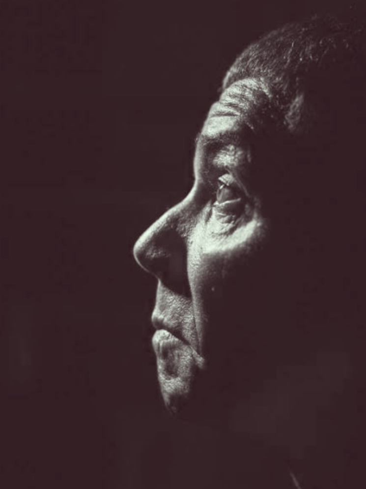
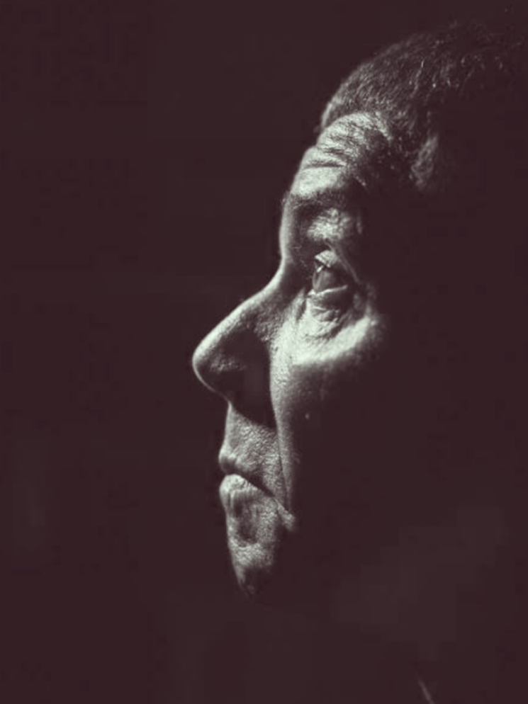

A violência se apossou da sua vida ainda no ventre da mãe. Depois de vários espancamentos que ela sofreu do marido, mesmo grávida.
Natural de Santa Rita do Sapucaí, em Minas Gerais, Pedrinho nasceu com uma rachadura no crânio devido a chutes que seu pai dava na mãe durante a gravidez em brigas. O pai, Pedro Rodrigues, que era lavrador à época, incluiu o menino ao lado da mãe como alvo de suas agressões.
A morte também entrou cedo para a sua vida. Aos 9 anos, ajudava o avô em um matadouro de bois em Varginha, mesma região, local onde os animais eram abatidos, esquartejados e onde os dois tinham o costume de consumir o sangue dos bovinos.
O primeiro crime do serial killer aconteceu quando ele tinha 13 anos. Ele afirmou que empurrou um primo no moedor de cana e depois o picou com um facão.
Seu primeiro assassinato não tardou. Foi em Alfenas, na mesma região, em 1968, quando o pai foi demitido por suspeita de roubar mantimentos da dispensa de uma escola pública onde era vigia noturno. O adolescente de 14 anos pegou uma espingarda e executou a tiros o vice-prefeito da cidade, que teria sido o responsável direto pela demissão do pai. Não satisfeito, ao saber das suspeitas de que outro vigia da escola seria o verdadeiro ladrão, ele o espreitou e o matou a tiros no mês seguinte. Para não ser preso, fugiu para a casa dos padrinhos, em uma favela de Mogi das Cruzes, na Grande São Paulo.
O adolescente passou então a conviver com traficantes de drogas locais e a dar vazão à sua violência nos conflitos territoriais das gangues, onde afirma também ter matado, mas sem confirmação de sua autoria. Foi nesse meio que conheceu uma viúva traficante, que tinha o apelido de Botinha. Ao lado dela, seguiu com as atividades do tráfico e matou três ex-comparsas de gangue. A mulher acabou morta em uma incursão da polícia, mas Pedro conseguiu fugir. Já com fama de matador entre os traficantes, arregimentou mais traficantes e assim começou com a sua própria boca-de-fumo, em São Paulo.
O desejo de vingança do maior assassino em série mineiro o pôs frente a frente com seu primeiro agressor, o próprio pai. Em 1973, ainda com 17 anos, soube da morte de sua mãe pelo próprio pai, Pedro Rodrigues, que a teria golpeado 21 vezes com uma faca e tentado vítimas também os outros filhos, que conseguiram fugir para as casas de vizinhos. Pedro filho então visitou o pai na delegacia, onde conseguiu entrar com um facão e desferiu 22 golpes no genitor, de quem arrancou o coração, mastigou e cuspiu um pedaço, fugindo em seguida.
Ainda com 17 anos, conheceu a mulher que declarou ser o grande amor de sua vida, chamada Maria Aparecida Olímpia. A mulher engravidou, mas não chegou a dar a luz, pois um traficante rival, de alcunha "China", mandou matar os membros da gangue de Pedro. Ele não foi encontrado, mas ao retornar para sua casa, encontrou a amada fuzilada e jurou vingança.
Passados alguns dias, ele e seus comparsas invadiram uma cerimônia de casamento onde China e sua gangue estavam e abriram fogo contra os convidados. Pedro matou China com um tiro de espingarda no peito. Outros seis membros da gangue rival foram mortos e 16 pessoas feridas a tiros conseguiram escapar e sobreviveram. Ele buscou abrigo na casa de parentes até que o tempo tirasse o foco deste massacre, mas o ímpeto matador não parou. Nessa mesma casa da família, a prima de Pedro contou que estava grávida e que o pai do filho dela não queria assumir o bebê e nem casar com ela. A resposta do matador foi novamente com a espingarda, matando o pai do bebê da prima.
Essa foi a gênese do maior assassino em série brasileiro, Pedro Rodrigues Filho, o Pedrinho Matador, que dizia ter vitimado mais de 100 pessoas e que foi assassinado em Mogi das Cruzes, em São Paulo, na manhã do último dia 5.